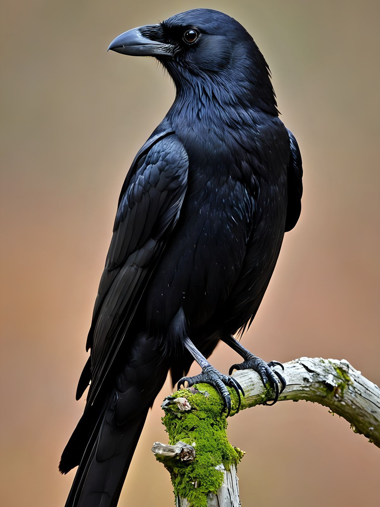
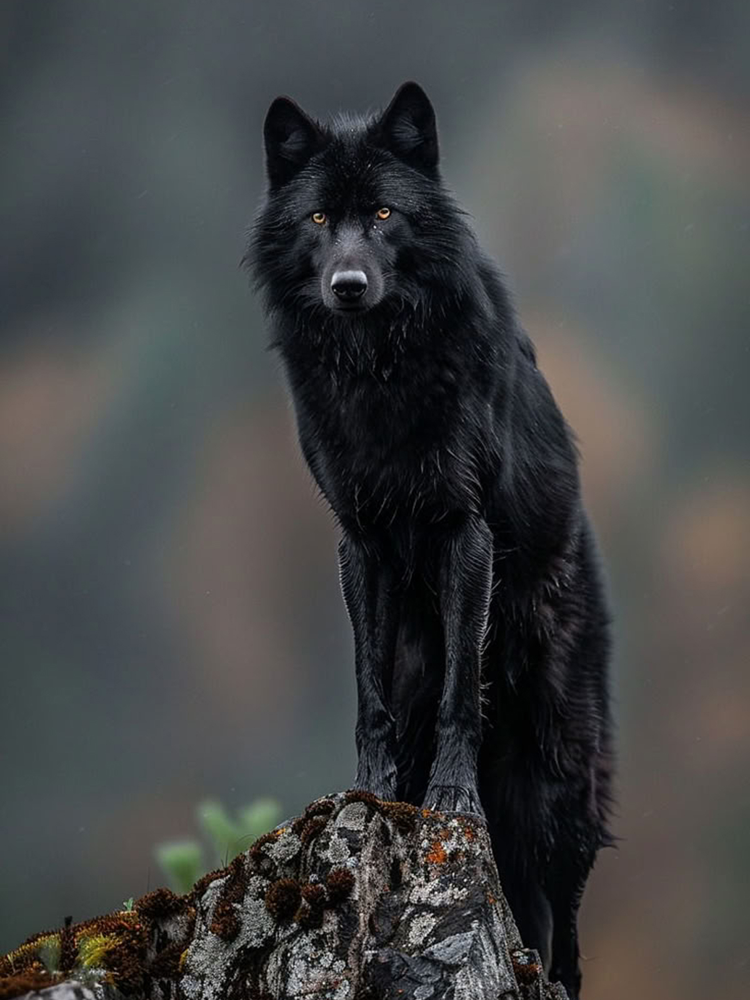
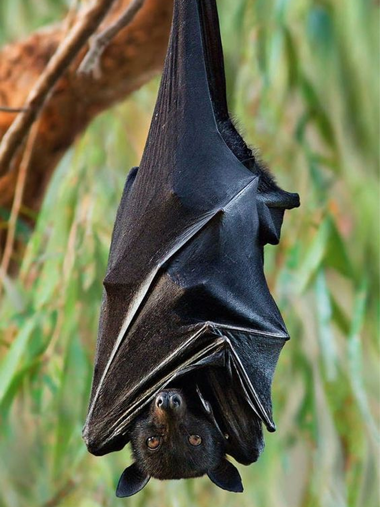
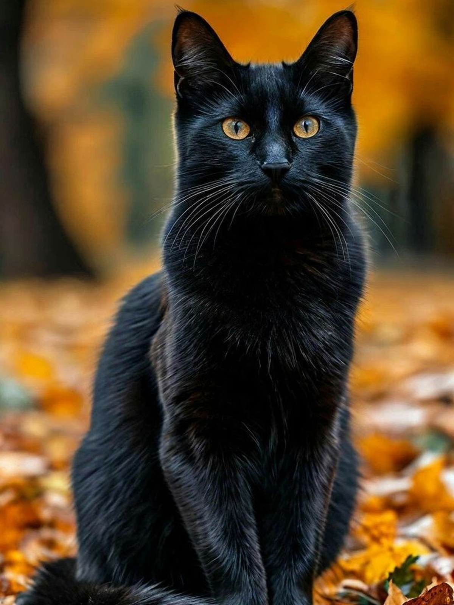
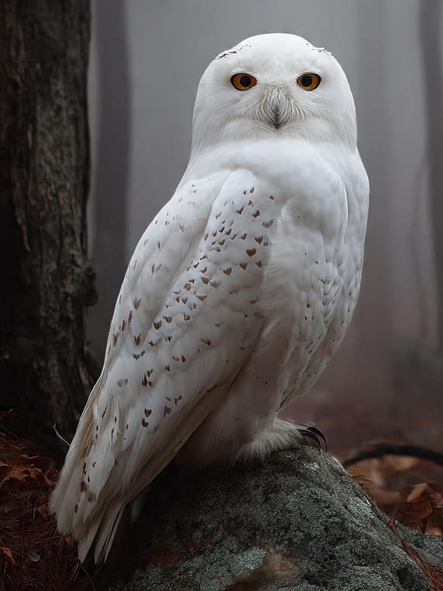
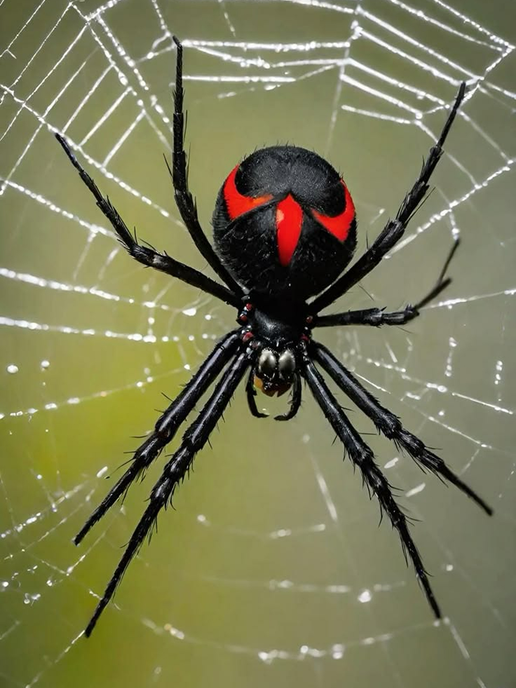
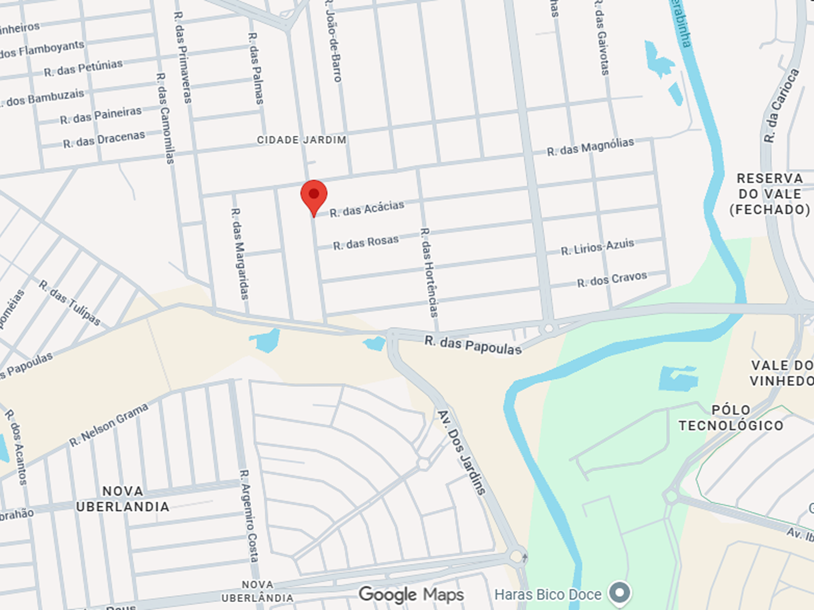

O corvo-comum (Corvus corax) é uma ave passeriforme da família Corvidae, amplamente distribuída pelo Hemisfério Norte. Destaca-se pelo porte robusto, plumagem negra uniforme e bico forte, adaptado a uma dieta oportunista e altamente variada.
Apresenta elevado grau de inteligência, sendo capaz de resolver problemas complexos, utilizar ferramentas e exibir comportamentos sociais sofisticados. Sua vocalização é grave e versátil, utilizada tanto para comunicação quanto para defesa territorial.
Habita desde regiões árticas até áreas montanhosas e desertos, demonstrando grande adaptabilidade ecológica. Alimenta-se de carniça, pequenos vertebrados, insetos e matéria vegetal, desempenhando papel relevante na reciclagem de nutrientes no ecossistema.
O lobo-negro, uma variação melanística do lobo-cinzento (Canis lupus), apresenta pelagem escura devido a uma mutação genética associada ao gene K. Essa coloração ocorre com maior frequência em populações da América do Norte, especialmente em ambientes florestais.
Mantém as características comportamentais da espécie, vivendo em matilhas estruturadas com hierarquia social bem definida. É um predador de topo, com dieta baseada principalmente em ungulados de médio e grande porte, além de pequenos vertebrados.
Habita florestas densas, tundras e regiões montanhosas, demonstrando alta capacidade de adaptação. Sua presença é ecologicamente significativa, contribuindo para o equilíbrio das cadeias tróficas e o controle populacional de presas.
O morcego-raposa (Pteropus vampyrus) é um quiróptero da família Pteropodidae, amplamente distribuído no sudeste asiático. Destaca-se pelo grande porte e pela face alongada, semelhante à de uma raposa, além de asas amplas que podem ultrapassar 1,5 metro de envergadura.
Diferentemente de muitos morcegos, possui dieta predominantemente frugívora, alimentando-se de frutas e néctar. Desempenha papel ecológico essencial como dispersor de sementes e agente polinizador em florestas tropicais.
Habita áreas florestais e manguezais, formando colônias numerosas em árvores altas. Apresenta hábitos noturnos e visão bem desenvolvida, utilizando-se mais da percepção visual e olfativa do que da ecolocalização típica de outros quirópteros.
O gato-preto (Felis catus) é um mamífero doméstico da família Felidae, caracterizado pela pelagem inteiramente escura, resultante de elevada concentração de melanina. Essa coloração pode ocorrer em diversas raças e está associada a variações genéticas específicas.
Apresenta comportamento ágil e predatório, com sentidos altamente desenvolvidos, especialmente a visão noturna e a audição. É um caçador oportunista, alimentando-se de pequenos vertebrados e insetos, mesmo quando domesticado.
Amplamente distribuído em ambientes urbanos e rurais, adapta-se com facilidade à convivência humana. Apesar de historicamente associado a superstições, desempenha papel relevante no controle de pragas e na dinâmica ecológica local.
A coruja-das-torres (Tyto alba) é uma ave de rapina noturna da família Tytonidae, amplamente distribuída em regiões temperadas e tropicais. Destaca-se pelo disco facial em forma de coração, plumagem clara e voo silencioso, adaptado à caça em baixa luminosidade.
Possui audição extremamente apurada, capaz de localizar presas com precisão mesmo na ausência de luz. Alimenta-se principalmente de pequenos mamíferos, como roedores, desempenhando papel fundamental no controle populacional dessas espécies.
Habita áreas abertas, zonas rurais e ambientes urbanos, utilizando cavidades e estruturas elevadas para nidificação. Sua presença é considerada um indicador ecológico relevante devido à sensibilidade a alterações no habitat.
A viúva-negra (Latrodectus mactans) é uma aranha da família Theridiidae, reconhecida pela coloração negra brilhante e pela marca característica em forma de ampulheta avermelhada no abdômen. É uma espécie de pequeno porte, porém com veneno de alta potência neurotóxica.
Apresenta comportamento sedentário, construindo teias irregulares em locais abrigados, onde captura insetos e outros artrópodes. O nome popular está associado ao comportamento ocasional de canibalismo sexual, no qual a fêmea pode consumir o macho após a cópula.
Distribui-se principalmente pelas Américas, habitando ambientes naturais e áreas antrópicas. Apesar de sua reputação, acidentes com humanos são raros e geralmente não letais, sendo evitáveis com medidas simples de precaução.
